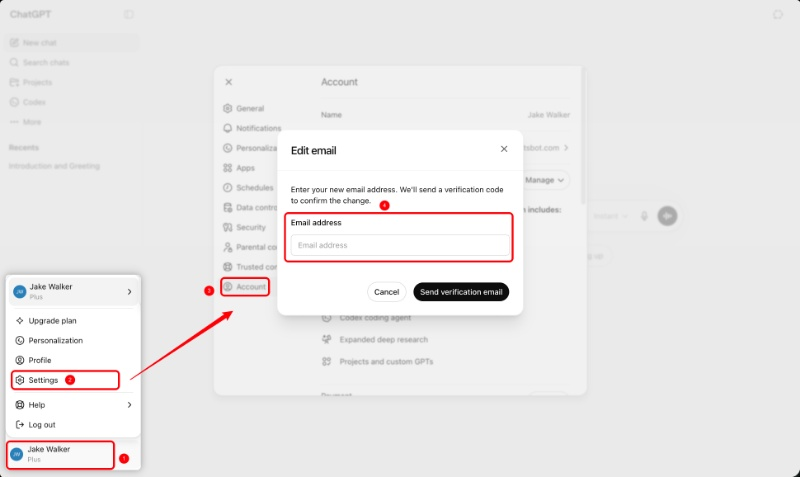
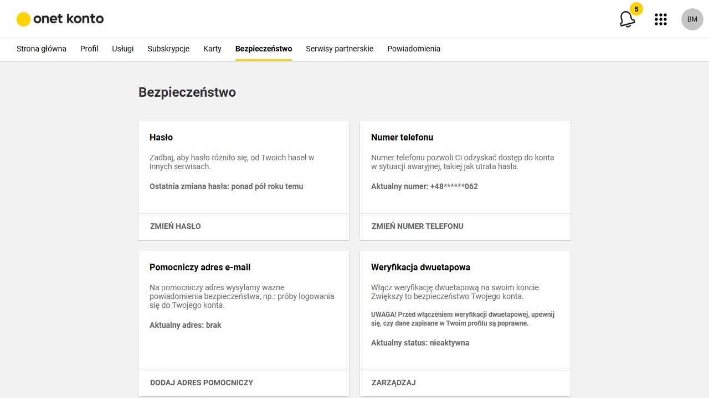
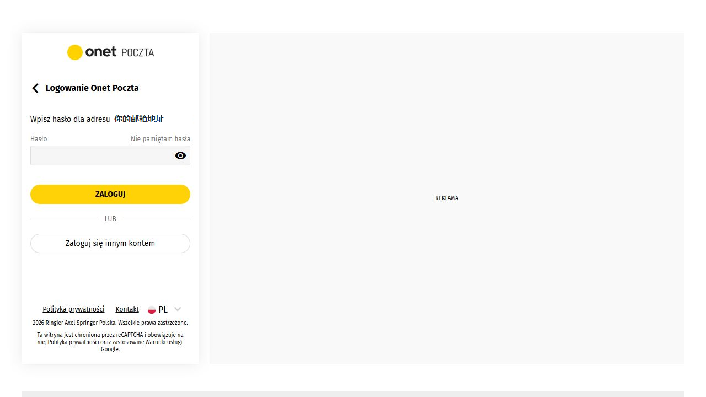
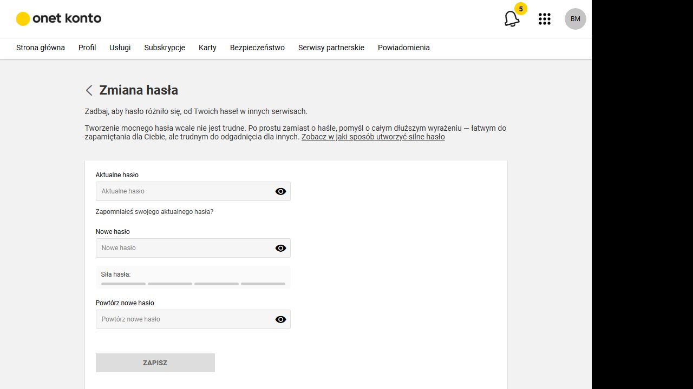

网页端操作教程
ChatGPT 更换绑定邮箱 & onet邮箱密码修改
第一部分：在 ChatGPT 上切换绑定邮箱
OpenAI 的账号邮箱需要在 ChatGPT 网页端操作，移动端 App 内通常不能直接更换。邮箱更换成功后，你会被登出，需要使用新邮箱重新登录。
- 登录 ChatGPT 网页版 打开 ChatGPT，使用当前账号登录。建议先确认账号没有未完成的重要对话或文件操作。
- 打开个人菜单 点击左下角头像或账号名称，在弹出的菜单里选择 Settings。
- 进入 Account 页面 在设置窗口左侧选择 Account。图中红框标出的就是该入口。
- 点击当前邮箱地址 在 Account 页面里找到邮箱地址一行，点击邮箱右侧区域，打开 Edit email 弹窗。
- 输入新邮箱并发送验证 在 Email address 输入框填入新邮箱，点击 Send verification email，然后去新邮箱收取验证邮件并完成确认。
- 用新邮箱重新登录 更换完成后，ChatGPT 和 OpenAI API 更换完成后，用新邮箱重新登录即可。
注意：新邮箱不能已经绑定另一个 OpenAI 账号。

第二部分：以 onet邮箱为例修改邮箱密码
这一步是保护邮箱本身。因为 ChatGPT 的邮箱验证邮件会发到新邮箱，建议在更换 ChatGPT 邮箱前后，都确认 onet邮箱密码足够安全。
- 登录 onet邮箱或 onet konto 进入 onet邮箱后，打开账号设置页。界面语言通常显示为波兰语，安全页是 Bezpieczeństwo；也可以直接进入 konto.onet.pl 账号中心。
- 进入“安全”标签 在顶部导航选择 Bezpieczeństwo。真实截图中可以看到该标签被黄色下划线标记为当前页面。
- 找到“密码”卡片 在安全页中找到 Hasło 卡片。它会显示上次密码更改时间，并提供 ZMIEŃ HASŁO 修改入口。
- 点击“更改密码” 点击卡片底部的 ZMIEŃ HASŁO。进入修改页后，按照页面要求输入当前密码、新密码，并再次确认新密码。
- 保存并重新登录邮箱 提交后如页面要求重新登录，请使用新密码登录。

真实页面截图流程：登录后进入安全页修改密码


如果登录后出现“Dodaj to urządzenie jako zaufane”（添加为受信任设备）提示，普通改密码建议选择 Pomiń 跳过，避免额外改变账号的受信任设备设置。
第三部分：完成后的检查清单
完成两个操作后，建议按下面顺序确认，避免邮箱改了但验证没完成，或者邮箱密码改了但旧设备仍在使用旧密码。
ChatGPT 侧检查
- 使用新邮箱成功登录 ChatGPT。
- 进入 Settings → Account，确认显示的是新邮箱。
- 如果有 API 平台使用需求，也用新邮箱登录确认。
- 如果没有收到验证邮件，检查垃圾邮件、广告邮件和过滤规则。
onet邮箱 侧检查
- 用新密码重新登录 onet邮箱。
- 检查恢复邮箱、手机号是否仍然可用。
- 检查是否有陌生设备或异常登录记录。
- 更新浏览器、手机邮件 App 或第三方邮箱客户端中的保存密码。